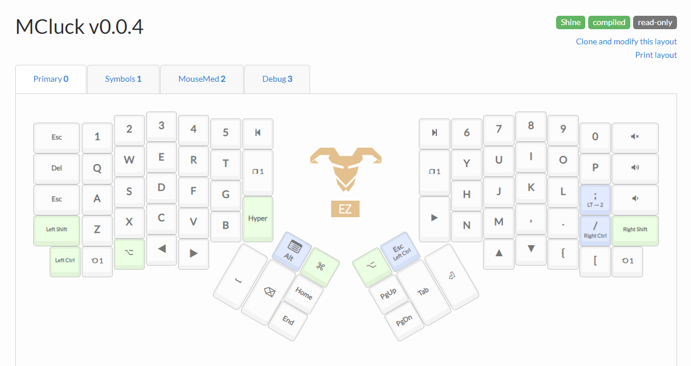
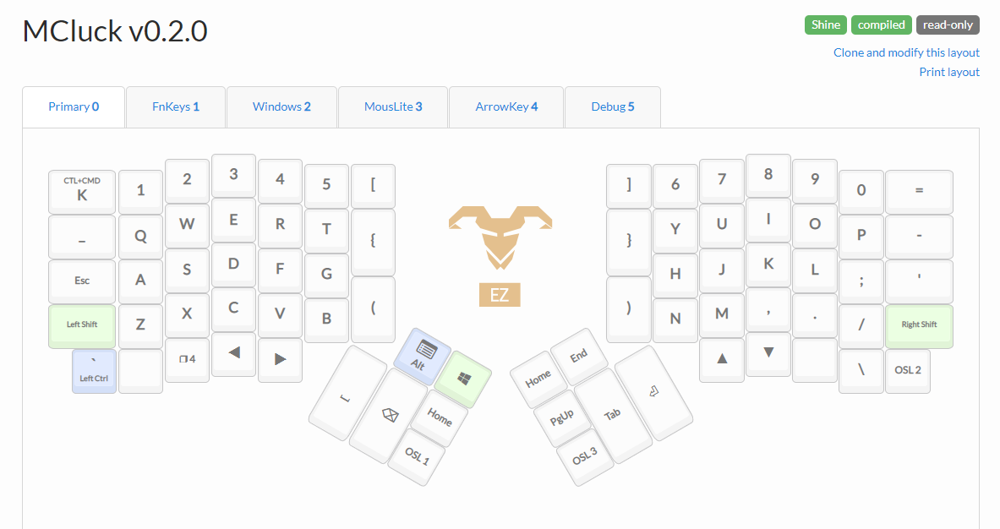
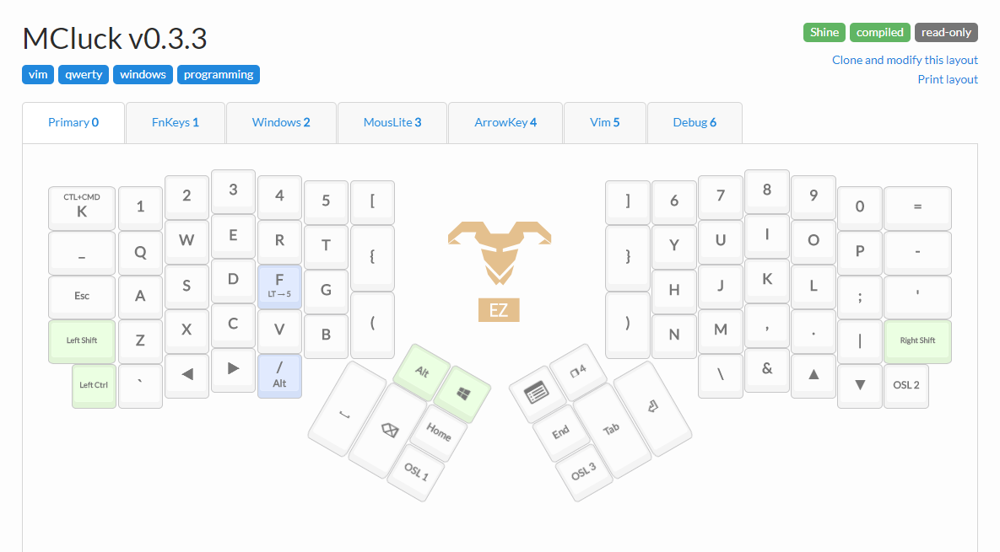

ErgoDox EZ 3 Month Impression
2018-11-07I love modifying my setup. I'm in an unending quest to find the perfect setup for programming. When looking for alternative computer peripherals, I kept coming across ergonomic keyboards. One in particular caught my eye: the ErgoDox EZ. It's a split keyboard, which means that the keyboard is divided in half. On top of that, it uses an ortholinear layout. That's a fancy way of saying that the keys are laid out on a grid rather than in a staggered layout like most other keyboards. It looked interesting but kind of expensive so I set the idea to the side and continued on with my life. Fast forward a couple of months and I was noticing that I was getting a lot of upper back pain. This seemed to be directly tied to the fact that my shoulders were curling in when typing. I looked at the ErgoDox EZ again and decided that the wider spread might help reduce my back pain. Okay, yes, I also thought it was cool and found a good excuse to take it for a spin.
This is my account of the last 3 months with the ErgoDox EZ.
First Impressions

Man, am I glad that I spent the time to learn how to properly touch type before ordering this. For years, I never learned proper touch typing. I just sort of learned where the keys were with no regard for which finger struck which key. I would hit the T key with my right index finger, hit H with my left index finger, and P with my ring finger, among other oddities. That sort of typing becomes nearly impossible on this keyboard. The ErgoDox EZ is split between the following pairs of keys: (5, 6), (T, Y), (G, H), (B, N). That means that whenever I would revert to my old ways and try to type T with my right hand, I'd end up hitting one of the longer keys along the inside edge of the right hand piece. On the default layout, that meant that I'd switch to layer 1.
Speaking of layers, wow, that is something new. By default, the ErgoDox EZ comes with a basic layer with letters, numbers, etc. then one with a numpad, function keys, and light keys (on the Shine model), then one with mouse and volume controls. I can see how this specific layout could be good for someone but it definitely was not for me. Luckily, it's very easy to modify the layout with the online configurator. Make a layout, download the file, flash the firmware. Super fast and easy.
Last thing I want to mention here is the thumb clusters. These things are game changers. I bound Space, Backspace, Tab, and Enter to my thumbs. I absolutely love it. No more awkward pinky aerobics to get to Backspace. No need to use my weakest fingers to hit some of my most frequently used keys. It's just plain magical.
One Month

I had a bit of an existential crisis around this time. With some practice, I was able to type English words at full speed again (around 70 WPM) but programming was still a huge pain in the ass. My symbols seemed to elude me and I was having difficult even writing out simple functions. That's when I went back to the drawing board. I looked at my current setup and found a lot of issues with it. I had done some things that I thought were smart but they were just tiring my hands out. So I started fresh and came up with a new layout from scratch. Immediately things became easier. I made all of my common programming symbols available with only one or two key presses and I didn't have to stretch too much to get to them. I also learned to better use the thumb clusters. With the thumb clusters, I can activate layers for symbols, numbers, and even the mouse.
Three Months

I've been using the same setup, or close to it, for about 2 months now. I'm back up to my normal programming speed and it feels amazing. It's really hard to go back to a normal keyboard now. Not because of the key layout though. After about 10 minutes in front of a normal keyboard I'll be used to it again. But I've gotten so used to having all of these convenient shortcuts at my disposal. My hands and shoulders feel so cramped up when I'm not using my ErgoDox. It just feels like a totally different experience. I'm not saying that it's for everyone but it's definitely the right thing for me.